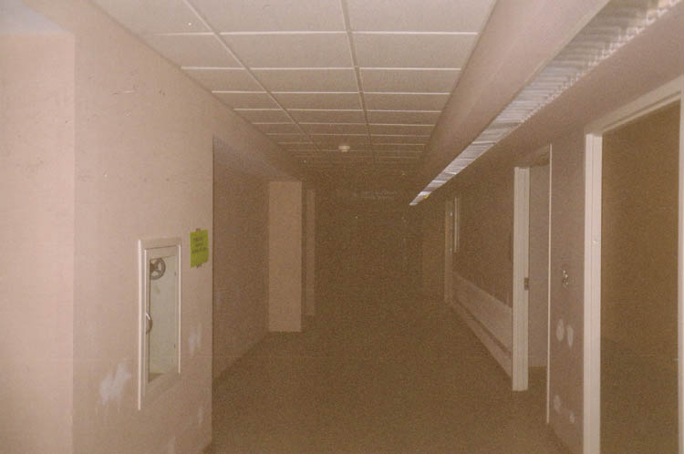
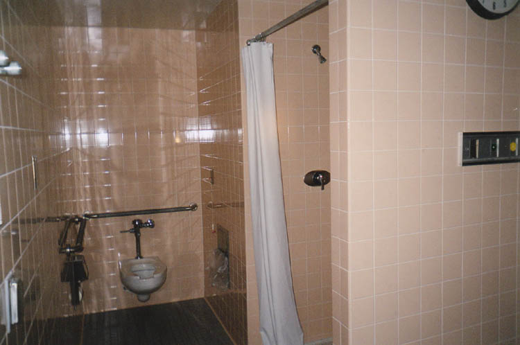
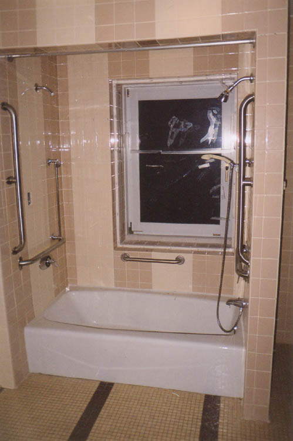
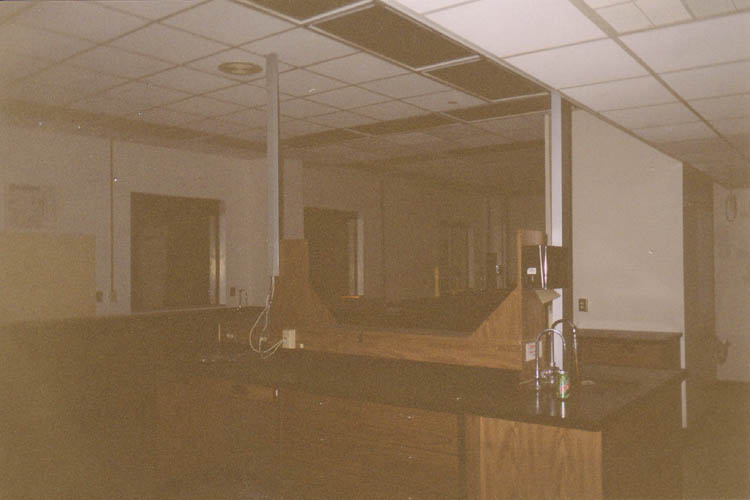
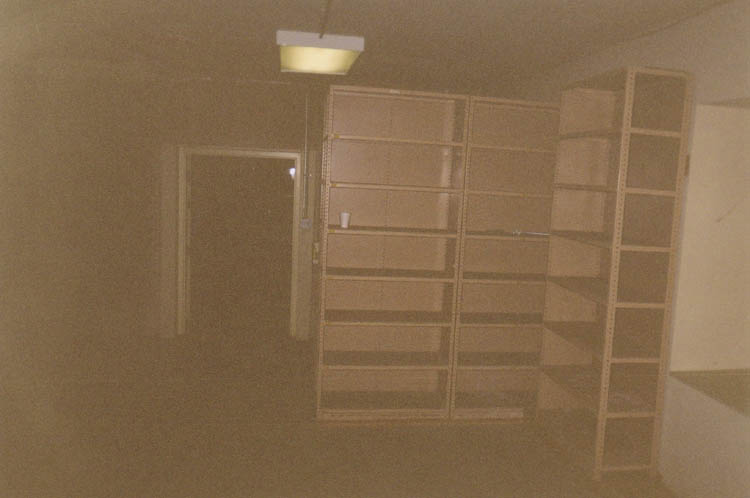
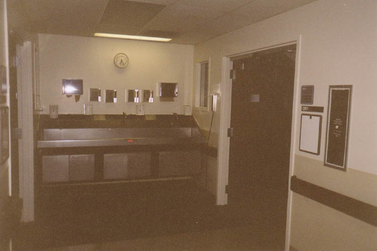
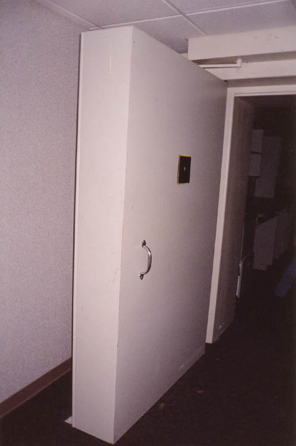
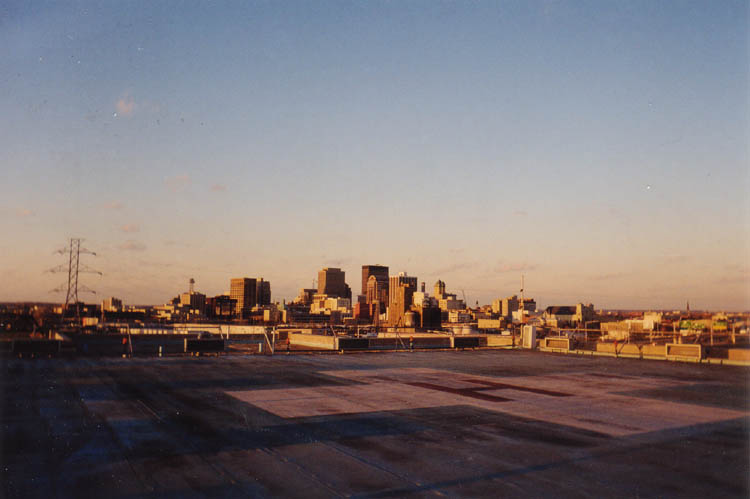

There are hundreds and hundreds of rooms in the Fransiscan--all the departments and wings you'd expect to see in any large hospital. Most of the building still had power when we were shown through, even if it was only auxiliary power. Many of the elevators still worked, and the whole place was extremely well-heated. Many of the rooms still contained equipment and furniture, meant to exhibit the various wings for potential buyers who tour it on occasion. (Patrick mentioned a stomach stapling clinic which has considered renting out a floor.) The whole thing reminded me of The Shining. It would have been possible to take a thousand interesting photos of the place, but I limited myself to just over a roll.

The first part of our tour took us past the main guard booth, which is located in the nurses' triage station in the emergency room. The waiting room was still there, with the little booths where you give them your billing information. We walked through and poked around the examination rooms. One room just off the ER was a tiled shower room where they would wash people down who were extremely dirty or bloody.

We toured the vast main lobby, then made our way upstairs to walk the halls and poke our heads into empty patient rooms stripped of their furnishings. The whole place still smelled like a hospital, even after two years of abandonment. Our guard buddy told us stories about finding homeless people hiding in the bathrooms.

One of the floors contained laboratory facilities with deep sinks and eyewash stations. In a supply closet was a metal cabinet full of glass microscope slides with samples of every disease imaginable. In a back room was a big metal rack which the guard recalled having been stocked with sample jars. Full of eyeballs and fetuses, I'm guessing.


The operating and recovery rooms were some of the most interesting part of the hospital. They still seemed remarkably sterile, and some were even lit up. X-ray labs had lead-lined glass shields for the technicians to stand behind. Outside the operating theaters you could see the sinks where the surgeons washed up before cutting somebody open.

There were a million odd and puzzling sights in the hospital, but one of the most interesting was the room with an eighteen-inch-thick door. It opened and closed by hitting a button which was luckily still functioning. I believe they did something with X-rays in this room, from what the guard said.

We took an elevator to the top to take a look at the roof, which features a landing pad for Life Flight helicopters and a nice view of the Little Miami River and downtown Dayton.

To continue touring the Franciscan Medical Center, and take a look at the rehabilitation center, morgue, and haunted places in the hospital, click below.

Back